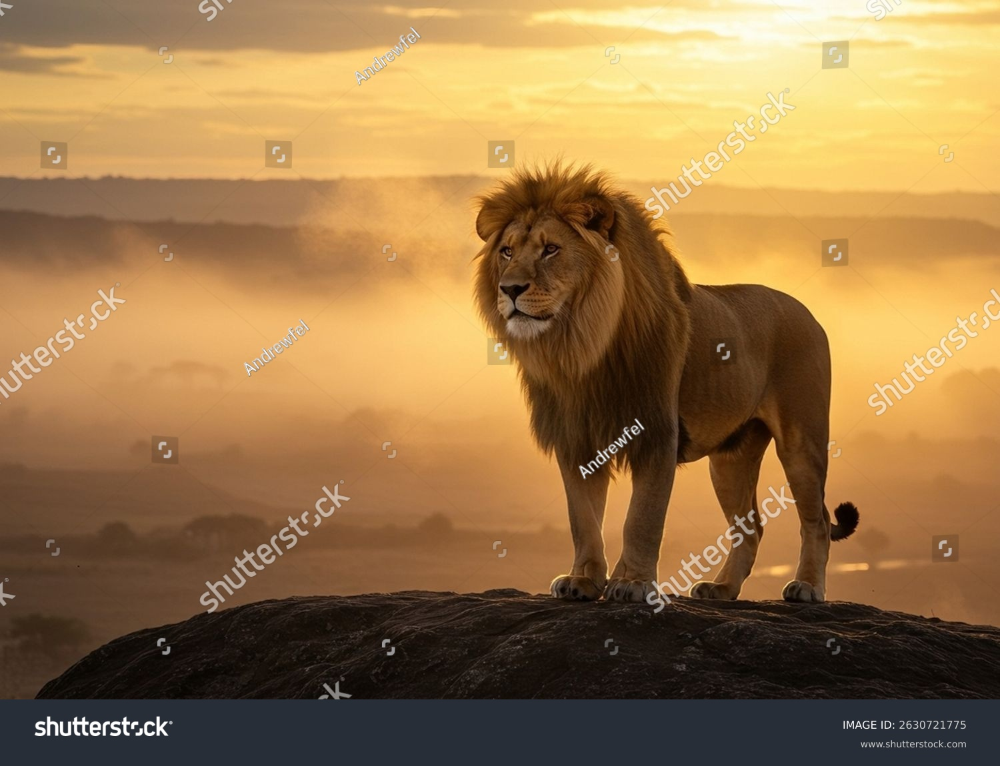

The Cultural Club of Khulna Government Model School and College (KGMSC) plays a vital role in nurturing creativity, cultural awareness, and artistic talent among students. Education is not limited to textbooks alone; cultural activities help students grow emotionally, socially, and creatively. At kgmsc, the Cultural Club provides students with opportunities to explore music, dance, drama, literature, and traditional cultural practices.
The Cultural Club reflects the rich heritage and diverse culture of Bangladesh while also encouraging modern creative expression. Students of khulna government model school and college actively participate in various cultural programs, festivals, and competitions through this club.
The main purpose of the Cultural Club at KGMSC is to develop students’ artistic abilities and cultural values. The club aims to create confident individuals who appreciate art, tradition, and creativity.
Key objectives include:
1.Promoting cultural awareness and heritage
2.Discovering and nurturing artistic talent
3.Building confidence and stage presence
4.Encouraging teamwork and creativity
5.Developing leadership and communication skills
The Cultural Club helps students become well-rounded individuals.
Cultural activities are essential for holistic education. At khulna government model school and college, cultural programs complement academic learning by reducing stress and enhancing creativity.
Benefits include:
1.Mental and emotional development
2.Improved self-expression and confidence
3.Cultural understanding and respect
4.Strong communication and presentation skills
The Cultural Club ensures balanced growth of students at kgmsc.
The Cultural Club at KGMSC actively organizes and participates in various cultural events throughout the year. These programs help students express their talents and celebrate national and cultural occasions.
Major events include:
1.National and cultural day celebrations
2.Annual cultural programs
3.Independence Day and Victory Day events
4.Language Movement Day observance
5.School and college festivals
These events strengthen unity and national pride among students.
Music is an important part of the Cultural Club at khulna government model school and college. Students interested in singing and music get opportunities to perform and improve their skills.
Music activities include:
1.Patriotic songs
2.Folk and modern songs
3.Group singing and solo performances
4.Practice sessions and rehearsals
Music helps students express emotions and build confidence.
Dance is a popular activity within the Cultural Club of KGMSC. Students learn traditional and modern dance forms and perform on various occasions.
Dance activities include:
1.Traditional Bangladeshi dances
2.Modern and creative dance
3.Group performances
4.Cultural stage shows
These activities improve physical fitness, coordination, and artistic expression.
Drama and acting play a significant role in the Cultural Club. Students of kgmsc participate in stage dramas, short plays, and skits.
Drama activities include:
1.Stage acting and theater
2.Script reading and dialogue practice
3.Role-playing and storytelling
4.Moral and educational plays
Drama enhances communication skills, confidence, and creativity.
The Cultural Club also supports literary and creative activities at khulna government model school and college. Students are encouraged to express themselves through writing and speaking.
Creative activities include:
1.Poetry recitation
2.Storytelling
3.Essay and creative writing
4.Cultural speeches and presentations
These activities improve language skills and critical thinking.
Preserving national culture is a key responsibility of the Cultural Club at KGMSC. Students learn about Bangladeshi traditions, customs, and heritage through active participation.
Focus areas include:
1.Traditional dress and customs
2.Folk music and dance
3.National history and culture
4.Cultural values and ethics
This helps students respect and preserve national identity.
The Cultural Club prepares students for inter-school, district, and national cultural competitions. Participation helps students gain exposure and recognition.
Competitions include:
1.Singing and dance contests
2.Drama and recitation competitions
3.Cultural quizzes
4.Talent shows
These experiences boost confidence and performance skills.
Teachers and cultural mentors at khulna government model school and college guide students in the Cultural Club. Their guidance ensures proper training and discipline.
Mentor responsibilities include:
1.Training and rehearsals
2.Event organization
3.Performance evaluation
4.Encouraging creativity and confidence
Their support helps students excel in cultural activities.
Cultural programs require teamwork and coordination. The Cultural Club at KGMSC helps students develop leadership qualities.
Students learn:
1.Team coordination
2.Event planning and management
3.Responsibility and discipline
4.Respect for others’ ideas
These skills are valuable for academic and future professional life.
The Cultural Club plays a vital role in building students’ personality and confidence. Stage performances help students overcome fear and express themselves openly.
Benefits include:
1.Public speaking skills
2.Confidence and self-esteem
3.Emotional expression
4.Social interaction skills
Students of kgmsc become confident and expressive individuals.
The Cultural Club enhances the reputation of Khulna Government Model School and College by showcasing talented students in various programs and competitions.
Contributions include:
1.Successful participation in cultural events
2.Representing KGMSC in competitions
3.Promoting cultural excellence
4.Strengthening the institution’s image
The Cultural Club of KGMSC aims to expand its activities and provide more opportunities for students in the future.
Future goals include:
1.More cultural workshops and training
2.Larger annual cultural programs
3.Participation in national-level events
4.Encouraging all students to join cultural activities
This vision ensures continuous growth of cultural excellence.
The Cultural Club of Khulna Government Model School and College (KGMSC) is a vibrant platform that nurtures creativity, culture, and confidence among students. Through music, dance, drama, and literary activities, the club helps students grow into creative, confident, and culturally aware individuals.
The Cultural Club plays a crucial role in shaping balanced personalities and preserving cultural heritage at kgmsc.